261017 PLAYTEST UPDATE
開啟試玩版 · 下載 11 張截圖與圖說
本頁為未修圖的瀏覽器截圖。證物及法庭預覽使用隔離瀏覽器的展示進度；完整流程另有三案驗收。影片目前仍為示意影像，等待企劃方提供自攝版本。
三份卷宗改為 KTV、DNA 鑑定、少年鬥毆；從首頁選案進入。
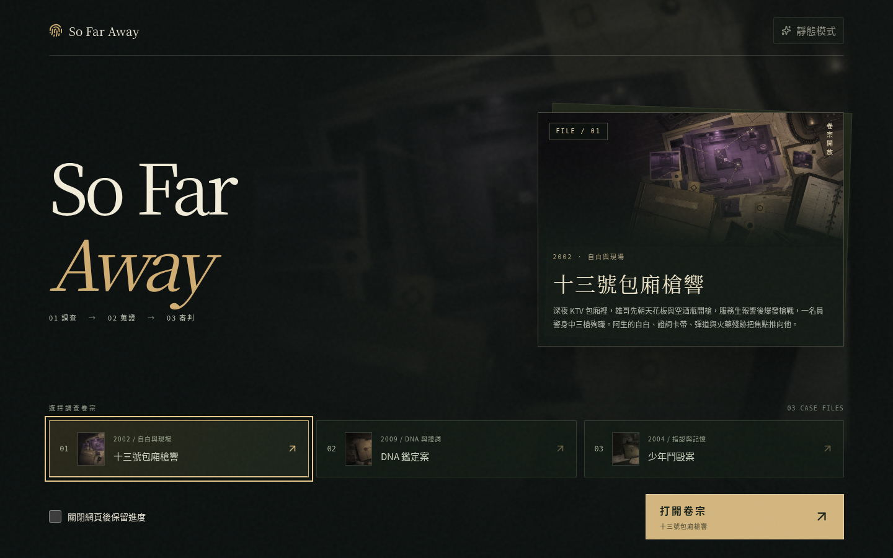
先說明移動、互動、蒐證與進庭條件。此處規則說明仍可替換為企劃方提供的正式文案。
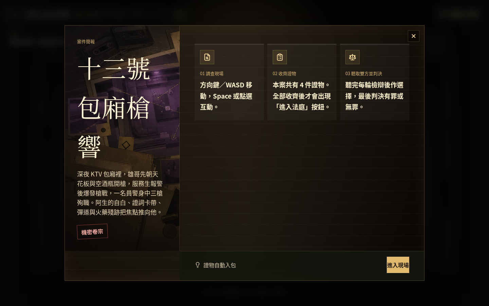
阿生案改為四件證物；收齊本案證物後才出現進入法庭的按鈕。
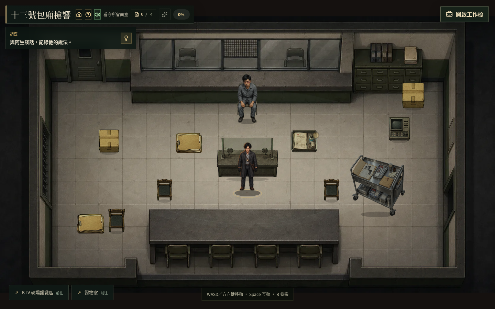
可在第一輪結束，或繼續追問；對話字型、行距與選項重新排版。
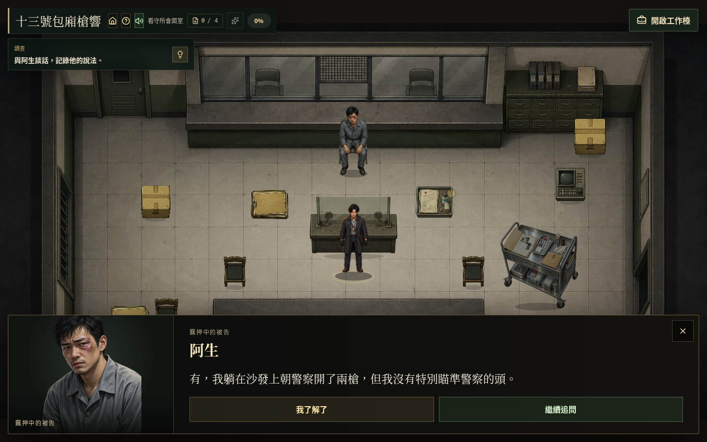
第一輪結束後，紀錄只含已問到的內容；自動收錄，底部可直接進入下一個證據。
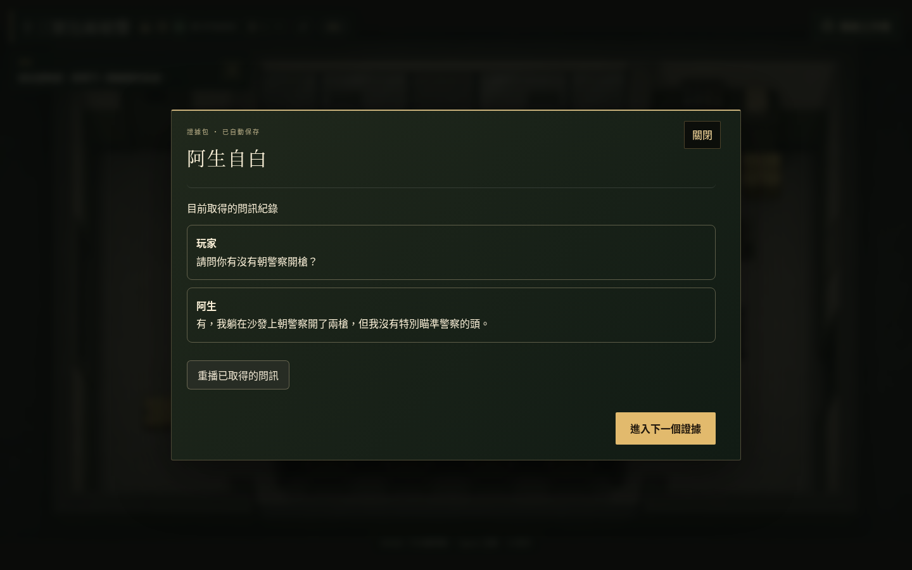
直接閱讀報告圖像，移除證物頁額外的解讀提示、綠框與圖片標記方塊。
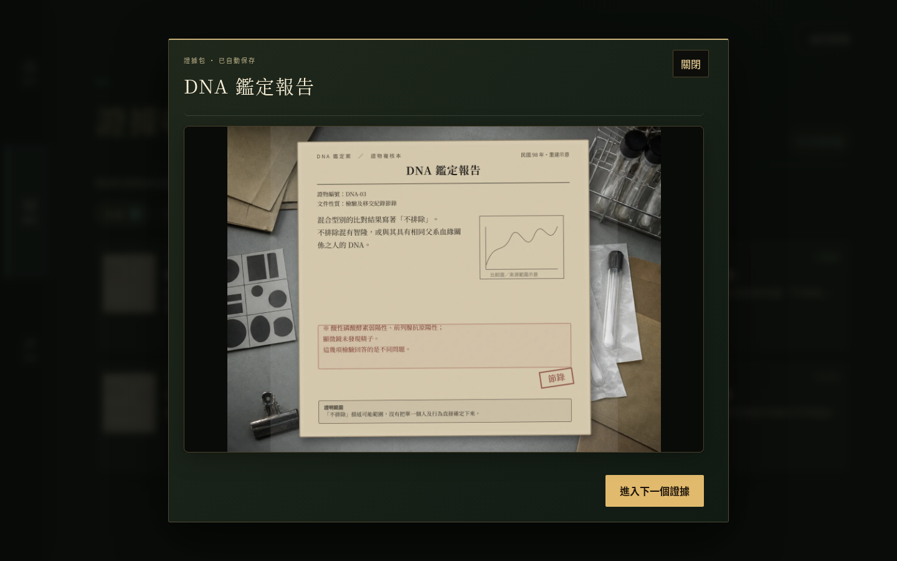
照片與五枚指印完整呈現；選一人或「都不選」都能繼續調查。
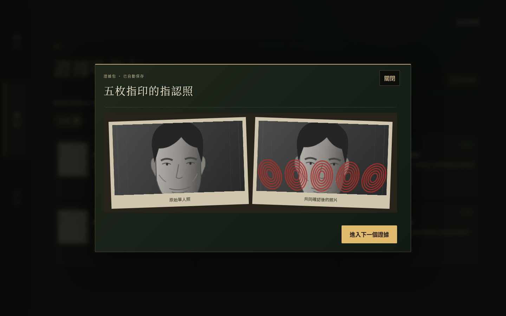
三案共十輪爭點，依文件的檢辯內容與順序發言；先聽完雙方，再選擇採信或保留。
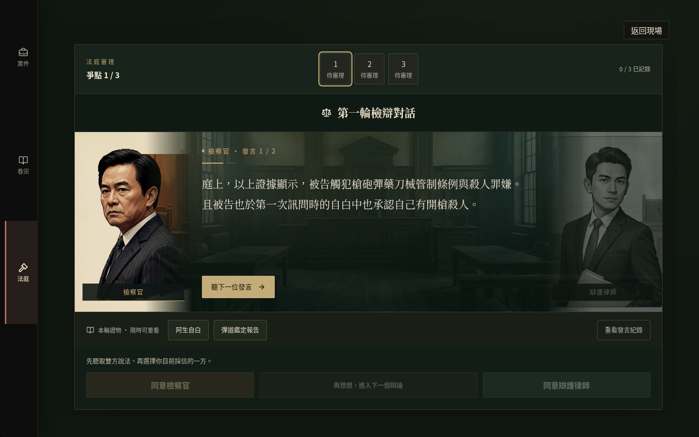
手機將人物排在發言上方，正文使用完整寬度；長文與操作按鈕保留在各自框內。
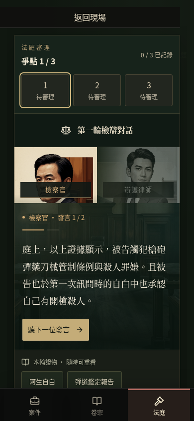
拿掉判決理由勾選與二次確認，直接選擇有罪／無罪。
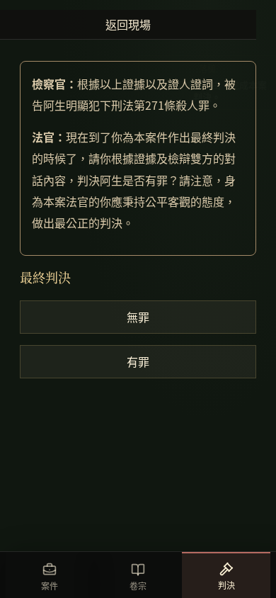
人物 1–6 與「都不選」共七個選項，手機兩欄排列。
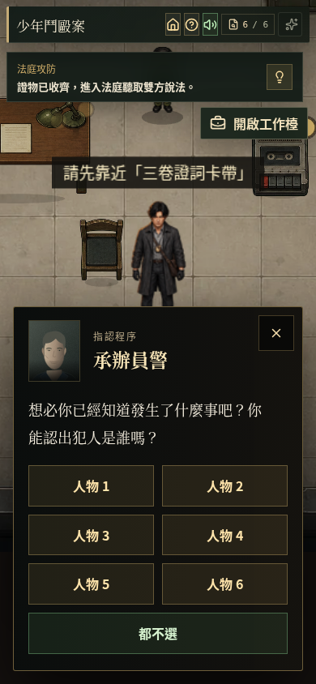